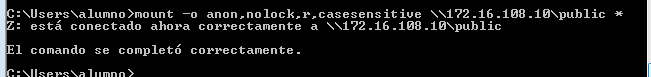

- Módulo: Administración de Sistemas Operativos
- Título del trabajo NFS (Network File System)
- Componentes del grupo: Iván José Hernández Regalado
- Curso Académico: 2014/2015
- Fecha de entrega: 9 de Marzo de 2015
Primero configuramos el servidor con un nombre e IP estática que no coincida con ninguna otra de la red local.
En el cliente hacemos los mismo, le ponemos un nombre que no coincida con ningun otro y la IP puede ser por DHCP.
Ahora vamos a las funciones del servidor y agregamos la función de Servicios de archivo y luego en la pestaña de Servicios de función marcamos el de NFS.
Creamos las carpetas public y private en C:\export y vamos a compartirlas a través de NFS. La public tendrá permisos de lectura y escritura mientras que la private solo de lectura.
Ahora en el cliente debemos activar la característica de servicios para NFS.
Con el comando nfsadmin client start iniciamos el servicio NFS y luego montamos un recurso compartido con el comando mount.
Para verificar que se montó usamos el comando net use.
Había un problema en Windows 2008 Server R que la parte de compartir la carpeta por NFS era diferente al Windows Server 2008 R2 y por ello las modificaciones no funcionaban, por ello probé a conectarme al servidor de un compañero con la version R2 y comprobar que efectivamente si se podían añadir carpetas.

Para desmontar la unidad hacemos el comando umount.
Primero configuramos la IP y el hostname del servidor de la siguiente manera.
Luego tras actualizar repositorios vamos a ejecutar el siguiente comando para instalar el NFS.
Ahora creamos las carpetas public y private en la ruta /var/export con los siguientes permisos.
Vamos al fichero /etc/exports y añadimos las siguientes dos líneas para especificar que la carpeta public la pueden motar todos los equipos, pero que la private solo el equipo con la IP 172.16.108.109 que en nuestro caso será nuestro cliente. Reiniciamos el servicio NFS para que se efectuen los cambios.
Podemos comprobar con el siguiente comando los recursos que se están compartiendo.
Pasamos ahora con el cliente una vez comprobamos con el comando anterior que el servidor está proporcionando las carpetas. Le ponemos una IP estatica que especifiqué anteriormente y un nombre de equipo que sea diferente sobre los demás.
Una vez comprobamos que tenemos conexión a internet y actualizamos los repositorios ejecutamos el siguiente comando para instalar el NFS cliente.
Comprobamos que hay conexión servidor-cliente a través de un ping y ejecutamos el comando para ver que recursos tiene a disposición el servidor.
Comprobamos que hay conexión servidor-cliente a través de un ping y ejecutamos el comando para ver que recursos tiene a disposición el servidor.
Ahora creamos las carpetas private y public en el cliente en la ruta /mnt/remoto para luego montar los recursos compartidos sobre dichas carpetas. Una vez montadas ejecutar el comando df -hT para comprobar que se montaron las carpetas. Hay un fallo en el comando ya que, aunque haya montado ambos recursos solo me sale el primero que monté pero luego a la hora de crear un archivo un public o ver el contenido de private se observa que si están los archivos que cremos en el servidor.
Para finalizar vamos al archivo /etc/fstab y añadimos las siguientes dos lineas en el fichero para que cada vez que iniciemos el equipo se monten automáticamente los recursos compartidos. Para la comprobación solo tenemos que reiniciar el equipo y comprobar con el comando df -hT que los recursos están montados.